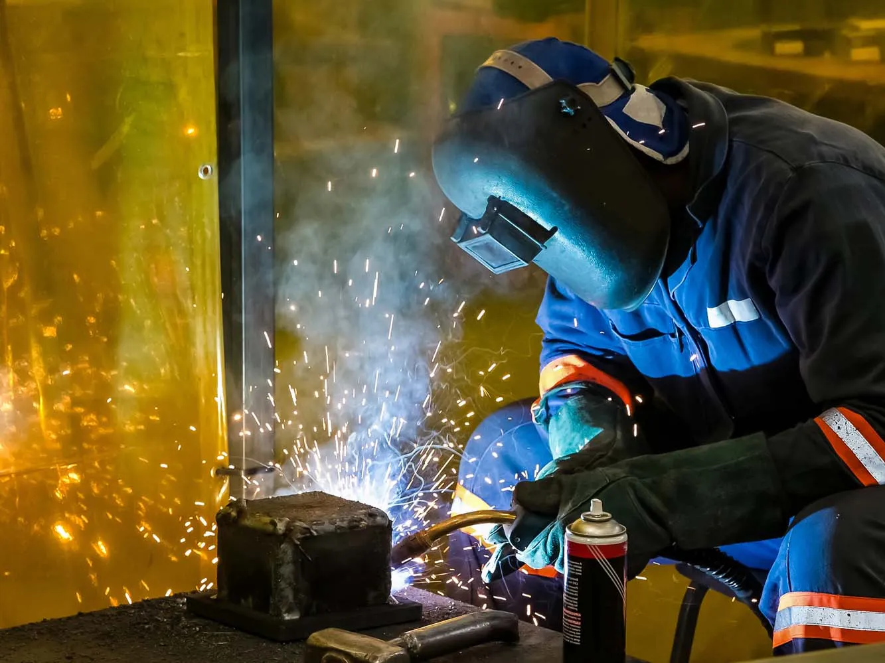
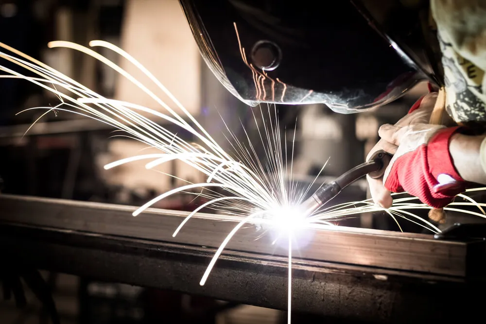

Home · Custom Welding
Custom Welding in New Orleans, LA
At Big Easy Mobile Welders, we turn your idea for a one-off metal piece into finished ironwork across New Orleans. Fire pits, signs, decor, railings and gates are measured, cut and welded to fit your space and your style.

We come to the jobWhat Goes Into Our Custom Welding Service in New Orleans?
Our custom welding service in New Orleans covers a free estimate, careful measuring and cutting to your dimensions, cleaning the metal before the first weld, clamping the workpiece in place, a welding method matched to the metal, full protective gear on our crew and a walkthrough of the finished piece.
A Free Estimate and a Plan
We talk through what you want built, where it will sit and what it is made of. You get a no-obligation quote with transparent pricing and no hidden fees.
Measured and Cut to Size
Every part is cut to the length and shape your design calls for. Accurate cuts make the fit-up tighter and the finished piece cleaner.
Clean Metal First
We strip dirt, rust and other contaminants with brushes and grinders, including a grinder fitted with a wire wheel. Clean metal takes a sounder weld.
A Secured Workpiece
Parts are set up and held firmly in place before welding. A piece that cannot shift gives a smoother, straighter result.
A Method Matched to the Metal
We choose TIG, stick or flux-cored welding to suit the metal and the job. Aluminum, copper and stainless steel often call for TIG.
Protective Gear on Every Job
Welding throws off UV light that can harm eyes and skin. Our welders work in safety glasses, welding gloves, masks and leather jackets.

What Custom Welding Projects Can We Build for You in New Orleans?
Our custom welding work in New Orleans covers metal fire pits, decorative metal pieces, custom metal signs, and railings, gates, fences and security features built for homes and businesses. Each piece is a one-off, sized and shaped to your space instead of picked from a catalog of stock parts.
Metal Fire Pits
A fire pit built to the size and shape you want for your patio or yard. We cut and weld it to your measurements and talk through the metal with you first.
Metal Decor and Custom Signs
Personalized metal decor and custom metal signs for a home or business. You bring the idea, and we cut and weld it into metal.
Railings, Gates and Fences
New Orleans has a long tradition of decorative ironwork, and we build custom railings, gates and fences to match the character of your property. From a single handrail to a full commercial railing run, each one is welded to your measurements.
Security Features
Custom security pieces welded to fit your openings and your property. Each one is built to order and sized to the spot it covers.
Why Does Custom Welding in New Orleans Need Materials Built for Humidity?
Custom welding in New Orleans needs materials and finishes chosen for the climate because Gulf humidity and salt air push bare steel toward rust. A custom piece that sits outdoors, such as a gate, railing or fire pit, should be built from the right metal and finished to resist corrosion from the start.

A custom piece in this city is only as lasting as the metal and finish behind it.
We build for the local climate, choosing materials and finishes that stand up to humid air and salt near the water. Moisture that settles on unprotected steel starts rust, and rust that begins at a joint can spread along the piece.
That is why we talk through the finish before the first cut, not after the last weld. Our guide on protecting welded metal from rust and corrosion explains the coating options in more detail.
Why Trust a Skilled Welder With Custom Welding in New Orleans?
A skilled welder matters for custom welding in New Orleans because ironwork is only as sturdy and durable as the hands that join it. A trained welder plans the project before starting, arrives with the right equipment and works as part of an organized team, so the finished piece matches what you asked for.

Skill You Can See in the Finish
Ironwork can make a structure sturdier and more durable, but the welder's skill decides how well it holds. Our trained, highly skilled welders bring more than 20 years of experience to every custom piece.
Prepared Before We Arrive
We estimate each project before starting, so we know what tools and equipment it needs. Custom work can call for specific equipment, and we come ready for it.
An Organized Team
Our welders work as a team, with an organized way of keeping up with each customer's needs. We also keep our materials and equipment up to date.
How Does a Custom Welding Project Work in New Orleans?
A custom welding project in New Orleans moves from idea to finished piece. You share your idea and get a free estimate, we plan the measurements and the metal, our welders cut, fit and weld the piece, and then we walk you through the finished work and offer easy payment options with follow-up support.
Share Your Idea
Call us or use our online estimate form to describe the piece, its size and where it will go.
Plan the Piece
We confirm measurements, the metal and the finish, then book a time that is convenient for you.
Cut, Fit and Weld
Our welders clean and cut the metal, secure each part and weld the piece together.
Review and Follow-Up
We walk you through the finished work, offer easy payment options and stay a call away.
 The rig comes to you
The rig comes to you
What Does Custom Welding Cost in New Orleans?
Three things set the cost of custom welding in New Orleans: the metal used, the labor the piece needs and the kind of project, from a small sign to a full railing run. We review your idea before quoting, so the estimate reflects the actual piece and you can set a budget that covers the work.
The Metal You Choose
Steel, stainless steel, aluminum and copper differ in material price and in how they are welded.
Labor and Detail
Intricate shapes, many joints and fine finishing take more hours than a simple frame.
The Kind of Project
A small decor piece, a fire pit and a long railing are very different jobs to plan and build.
Size of the Piece
Larger pieces use more metal and filler, and they take longer to cut, fit and weld.
What Should You Know Before Starting a Custom Welding Project in New Orleans?
Before starting a custom welding project in New Orleans, decide roughly what metal you want, gather measurements or a sketch, and think about where the piece will live. Those three answers shape the welding method, the finish and the estimate, and they help us arrive ready to build it right.
Which Metal Suits the Piece
Steel is strong and familiar, while aluminum is lighter and resists rust but welds differently. Our guide on choosing between aluminum and steel welding walks through the tradeoffs.
Measurements and a Sketch
Rough dimensions, a drawing or a photo of something similar help us plan the cuts. The clearer the picture, the more accurate the estimate.
Where the Piece Will Live
An outdoor gate or fire pit needs a different finish than an indoor sign. Tell us whether it will face rain, sun, heat or salt air.
What Do Customers Say About Our Custom Welding Team in New Orleans?
Customers single out the workmanship in their reviews, calling it top-notch, and add fair prices and professional service. Those reviews describe the same licensed, insured New Orleans team that measures, cuts and welds one-off pieces, from fire pits and signs to railings and gates, for homes and businesses across the area.
Big Easy Mobile Welders provide quality welding work at a reasonable price. They have been reliable and quick to respond whenever I've needed them, which has made it easy for me as their customer!
The guys from Big Easy Mobile Welders were great! They came to my house and welded two iron railings with a quick turnaround time, which was just what I needed. The quality of workmanship is top notch which made me a satisfied customer! If you need anything welded then these guys will be able to help out big time.
I can't recommend Big Easy Mobile Welders enough! They helped me out of a jam by welding our gate, and their work is amazing. The fast service combined with great quality made all the difference in getting things done quickly without any hassle for me. Thanks again, guys!
If you need a welder for any type of job, I highly recommend Big Easy Mobile Welders. The team did an amazing job on my home and business! They were professional from start to finish. Thankful that their work could help me get back up and running again sooner than expected.
I had the pleasure of working with Big Easy Mobile Welders this past week. They are not only professional and skilled, but also very affordable! I highly recommend them for any welding job you may need done on your property or vehicle. You won't regret using these guys as they do amazing work at a fair price 10/10 would do again!
What Other Services Pair With Custom Welding in New Orleans?
Custom welding in New Orleans often goes hand in hand with our other services: metal fabrication for larger builds, iron railing, gate and fence welding, arc welding and on-site mobile welding. Every service is handled by the same licensed, insured team of welders that builds your custom piece.

Metal Fabrication
Fabrication of all types of metal for residential, commercial and industrial settings.
View metal fabrication →
Iron Railing Welding
Custom indoor and outdoor railings for stairways, decks and balconies, built to fit your property.
View railing welding →
Gate Welding
Gate repairs and custom gates in steel or aluminum, with materials and tools covered in your estimate.
View gate welding →
Fence Welding
Fence repairs and custom fence fabrication, with the material and process chosen for your fence.
View fence welding →
Arc Welding
Shielded and non-shielded arc welding for commercial and residential customers.
View arc welding →
Mobile Welding
On-site welding at your home or business, from pipe and fence work to gates, railings and windows.
View mobile welding →
Where Can You Get a Free Custom Welding Estimate in New Orleans?
The simplest route to a free custom welding estimate in New Orleans is a call to (504) 370-2757 or our online estimate form. Describe the piece you want, its rough size and where it will go, and we will send back a no-obligation quote with no hidden fees.
Loading the estimate form...
If it does not appear, call us at (504) 370-2757.

What Do Clients Ask Before Ordering Custom Welding in New Orleans?
People in New Orleans planning a custom piece tend to ask the same things: what custom welding is, what it costs, who does it, which metal suits an outdoor fire pit, how custom metal signs are made and chosen, and which welding processes work on stainless steel and aluminum.
What is custom welding?
Custom welding builds a one-off piece to a customer's own design and measurements, rather than producing stock parts. It covers items like fire pits, metal signs, decor, railings and gates. The welder cuts, fits and joins the metal so the finished piece suits its exact space and purpose.
How much does custom welding cost?
Custom welding cost depends on the metal used, the labor involved and the kind of project. A small sign or bracket is a far smaller job than a long railing or a detailed gate. Because every piece is different, we look at your idea first and give a free, no-obligation estimate.
Who does custom welding?
Custom welding is done by welders and welding shops that build pieces to order, and some mobile welders handle it as well. Look for a licensed, insured team with experience in the metal you want. Our welders bring more than 20 years of experience to custom projects for homes and businesses.
What metal is best for an outdoor fire pit?
Thick carbon steel is a common choice for an outdoor fire pit because it holds up to heat and resists warping, and it often weathers to a rust-colored finish. Stainless steel resists corrosion better in humid air but usually costs more. Galvanized steel is best avoided, since heating its zinc coating can give off harmful fumes.
How do I choose a weatherproof custom metal sign?
Start with a metal that resists corrosion, such as aluminum or stainless steel, or steel protected by a durable coating. Then consider the finish, the mounting and how much sun and rain the sign will face. In humid, salty air, the finish matters as much as the metal underneath it.
How are custom metal signs made?
A custom metal sign usually starts as a design that sets the size, lettering and shape. The metal is then cut to that pattern, edges are cleaned up, and any frame, posts or brackets are welded on. Finally the sign is cleaned and given a paint or protective coating suited to its location.
Can you weld stainless steel with a MIG welder?
Yes, stainless steel can be MIG welded with stainless filler wire and a shielding gas blend made for stainless. Many welders still prefer TIG for thin or highly visible stainless parts because it gives more control over heat and a cleaner bead. The right choice depends on the thickness and the finish wanted.
Can you weld aluminum with a stick welder?
Aluminum can be stick welded with special aluminum electrodes, but it is difficult and the results are often rough. Aluminum conducts heat quickly and forms an oxide layer that resists fusion. For most aluminum work, welders usually choose TIG or MIG instead, since they give cleaner and more consistent welds.


Book Your Free Mobile Welding Estimate
Tell us what needs welding, and we will bring the rig to your door anywhere in the New Orleans area.